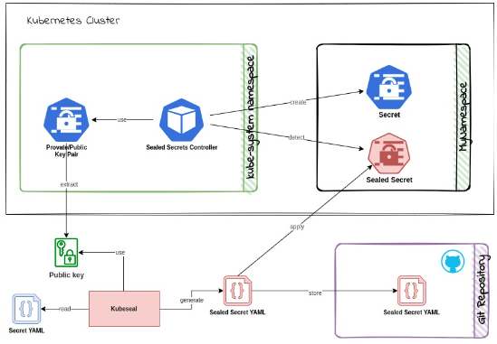
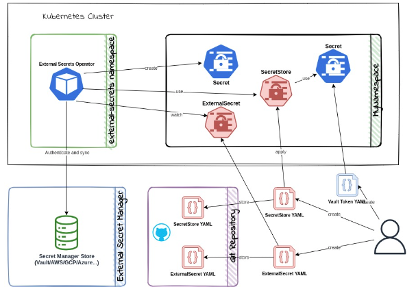
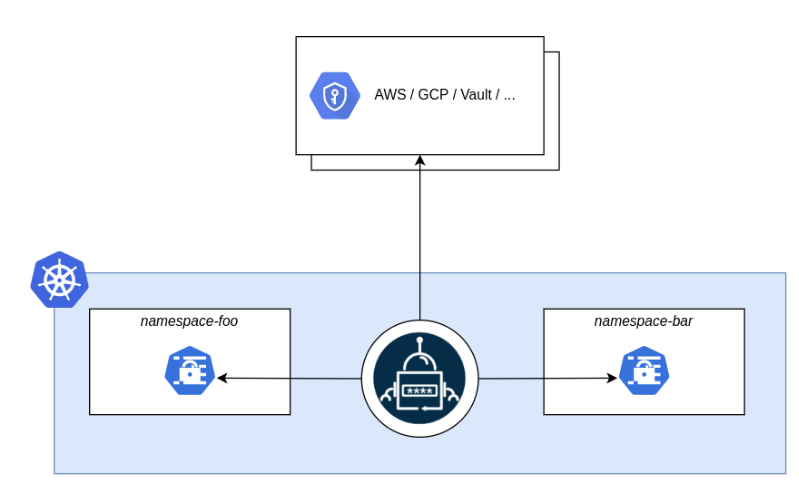
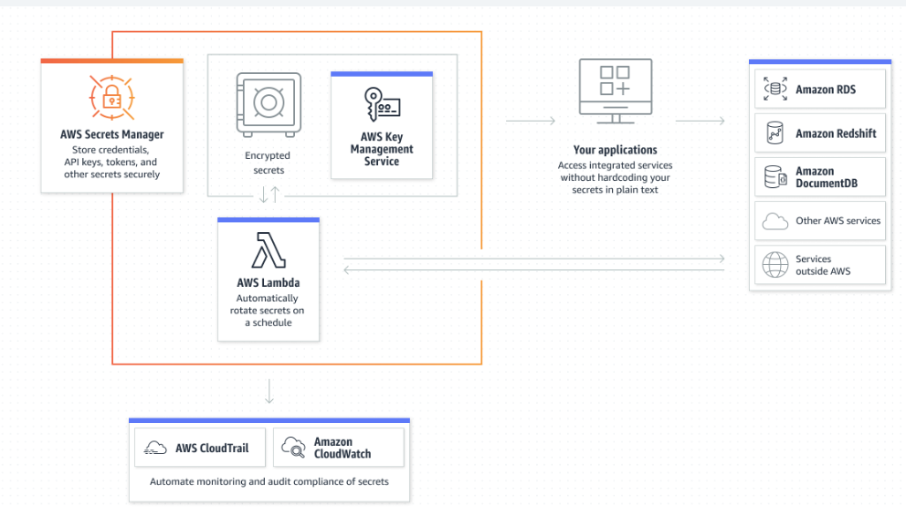
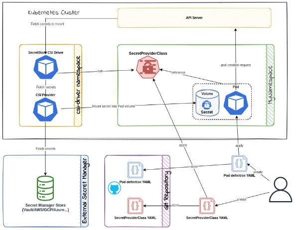

12 Kubernetes 的 secret 并不是真正的 secret
https://auth0.com/blog/kubernetes-secrets-management/#Sealed-Secrets
引言
Kubernetes 已经成为现代软件基础设施中不可或缺的一部分。因此，管理 Kubernetes 上的敏感数据也是现代软件工程的一个重要方面，这样您就可以将安全性重新置于 DevSecOps 中。Kubernetes 提供了一种使用 Secret 对象存储敏感数据的方法。虽然总比没有好，但它并不是真正的加密，因为它只是 base64 编码的字符串，任何有权访问集群或代码的人都可以对其进行解码。
注意： 默认情况下，Kubernetes Secrets 未加密存储在 API 服务器的底层数据存储 (etcd) 中。具有 API 访问权限的任何人都可以检索或修改 Secret，任何具有 etcd 访问权限的人也可以。此外，任何有权在命名空间中创建 Pod 的人都可以使用该访问权限来读取该命名空间中的任何 Secret；这包括间接访问，例如创建 Deployment 的能力。— Kubernetes 文档
使用正确的 RBAC 配置和保护 API 服务器可以解决从集群读取 secret 的问题，了解有关 RBAC 和集群 API 安全性的更多信息请查看如何使用最佳实践保护您的 Kubernetes 集群。
保护源代码中的的 secret 是更大的问题。每个有权访问包含这些 secret 的存储库的人也可以解码它们。这使得在 Git 中管理 Kubernetes secret 变得非常棘手。
让我们看看如何使用更安全的方式设置 secret :
- Sealed Secrets
- External Secrets Operator
- Secrets Store CSI driver
Sealed Secrets
Sealed Secrets 是一个开源的 Kubernetes 控制器和来自 Bitnami 的客户端 CLI 工具，旨在使用非对称密码加密解决“在 Git 中存储 secret ”问题的一部分。具有 RBAC 配置的 Sealed Secrets 防止非管理员读取 secret 是解决整个问题的绝佳解决方案。

它的工作原理如下：
- 使用公钥和 kubeseal CLI 在开发人员机器上加密 secret 。这会将加密的 secret 编码为 Kubernetes 自定义资源定义 (CRD)。
- 将 CRD 部署到目标集群。
Sealed Secret控制器使用目标集群上的私钥对机密进行解密，以生成标准的 Kubernetes secret。
私钥仅供集群上的 Sealed Secrets 控制器使用，公钥可供开发人员使用。这样，只有集群才能解密机密，而开发人员只能对其进行加密
优点
- 支持模板定义，以便可以将元数据添加到未加密的 secret 中。例如，您可以使用模板定义为未加密的 secret 添加标签和注释。
- 未加密的 secret 将由加密的 secret CRD 拥有，并在加密的 secret 更新时更新。
- 默认情况下，证书每 30 天轮换一次，并且可以自定义。
- secret 使用每个集群、命名空间和 secret 组合（私钥+命名空间名称+ secret 名称）的唯一密钥进行加密，防止解密中出现任何漏洞。在加密过程中，可以使用
strict,namespace-wide,cluster-wide来配置范围。 - 可用于管理集群中的现有 secret。
- 具有 VSCode 扩展，使其更易于使用。
缺点
- 由于它将加密的 secret 解密为常规 secret ，如果您有权访问集群和命名空间，您仍然可以解码它们。
- 需要为每个集群环境重新加密，因为密钥对对于每个集群都是唯一的。
安装
在集群上安装 controller，在本地机器上安装 CLI。
- 从 release 页面下载 controller.yaml。
- 执行
kubectl apply -f controller.yaml将 controller 部署到集群中。控制器将安装到kube-system命名空间下。 - 安装 CLI，通过
brew install kubeseal安装，或者从 release 页面下载。
使用
让我们创建一个 sealed secret 。
创建一个 secret，通过命令 kubectl create secret 或者编写 yaml 文件，如下所示：
echo -n secretvalue | kubectl create secret generic mysecret \
--dry-run=client \
--from-file=foo=/dev/stdin -o yaml > my-secret.yaml
这将产生一个如下所示的 secret 定义；
# my-secret.yaml
apiVersion: v1
data:
foo: c2VjcmV0dmFsdWU=
kind: Secret
metadata:
creationTimestamp: null
name: mysecret
- 使用 kubeseal CLI 加密 secret。这将使用从服务器获取的公钥加密 secret 并生成加密的 secret 定义。现在可以丢弃
my-secret.yaml文件。您也可以下载公钥并在本地离线使用。
kubeseal --format yaml < my-secret.yaml > my-sealed-secret.yaml
这将产生一个加密的 secret 定义，my-sealed-secret.yaml，如下所示；
# my-sealed-secret.yaml
apiVersion: bitnami.com/v1alpha1
kind: SealedSecret
metadata:
creationTimestamp: null
name: mysecret
namespace: default
spec:
encryptedData:
foo: AgA6a4AGzd7qzR8mTPqTPFNor8tTtT5...==
template:
metadata:
creationTimestamp: null
name: mysecret
namespace: default
此文件可以安全地提交到 Git 或与其他开发人员共享。
- 最后，您可以将其部署到要解封的集群中。
kubectl apply -f my-sealed-secret.yaml
- 现在，您可以在集群中看到未加密的 secret 。
kubectl describe secret mysecret
您可以像使用任何其他 Kubernetes 密钥一样在部署中使用此密钥。
External Secrets Operator
Sealed Secrets 是保护 secret 的方式之一，但除此之外还有更好的方法。
使用 External Secrets Operator (ESO) 和外部 secret 管理系统，如 HashiCorp Vault、AWS Secrets Manager、Google Secrets Manager 或 Azure Key Vault。虽然设置起来有点复杂，但如果您使用云提供商来托管您的 Kubernetes 集群，这是一种更好的方法。ESO 支持许多这样的 secret 管理器并监视外部 secret 存储的变化，并使 Kubernetes secret 保持同步。

ESO 提供了四个 CRD 来管理 secret。
ExternalSecret 和 ClusterExternalSecret CRD 定义需要获取哪些数据以及如何转换这些数据。SecretStore 和 ClusterSecretStore CRD 定义了与外部 secret 存储的连接细节。Cluster 前缀的 CRD 表示作用范围是集群。
它的工作原理如下；
- 创建 SecretStoreCRD 以定义与外部机密存储的连接详细信息。
- 在外部 secret 存储中创建 secret 。
- 创建一个 ExternalSecretCRD 来定义需要从外部 secret 存储中获取的数据。
- 将 CRD 部署到目标集群。
- ESO 控制器将从外部 secret 存储中获取数据并创建 Kubernetes secret 。
优点
- secret 存储在安全的外部 secret 管理器中，而不是代码存储库中。
- 使 secret 与外部 secret 管理器保持同步。
- 与许多外部 secret 管理者合作。
- 可以在同一个集群中使用多个 secret 存储。
- 提供用于监控的 Prometheus 指标。
缺点
可以使用以下命令通过 Helm 安装 ESO ：
helm repo add external-secrets https://charts.external-secrets.io
helm install external-secrets \
external-secrets/external-secrets \
--namespace external-secrets \
--create-namespace
如果您想在 Helm release 中包含 ESO，请将 --set installCRDs=true` 标志添加到上述命令中。
让我们看看如何将 ESO 与不同的 secret 管理器一起使用。
- External Secrets Operator (ESO)

- AWS Secrets Manager

- Azure Key Vault
使用 HashiCorp Vault
HashiCorp Vault 是一个流行的 secret 管理器，提供不同的 secret 引擎。ESO 只能与 Vault 提供的 KV Secrets Engine 一起使用。Vault 在 HashiCorp 云平台 (HCP) 上提供了一个您可以自行管理的免费开源版本和一个带有免费等级的托管版本。
确保您在本地 Vault 实例或 HCP cloud 中设置了键值 secret 存储。您还可以使用 Vault Helm chart 将 Vault 部署到 Kubernetes 集群。
- 创建一个新的 SecretStore CRD，vault-backend.yaml，以定义与 Vault 的连接详细信息。
# vault-backend.yaml
apiVersion: external-secrets.io/v1beta1
kind: SecretStore
metadata:
name: vault-backend
spec:
provider:
vault:
server: 'YOUR_VAULT_ADDRESS'
path: 'secret'
version: 'v2'
namespace: 'admin' # required for HCP Vault
auth:
# points to a secret that contains a vault token
# https://www.vaultproject.io/docs/auth/token
tokenSecretRef:
name: 'vault-token'
key: 'token'
- 创建一个 secret 资源来保存 Vault token。使用具有对 Vault KV 存储中的 secret/ 路径具有读取权限的策略的令牌。
kubectl create secret generic vault-token \
--dry-run=client \
--from-literal=token=YOUR_VAULT_TOKEN
- 在 Vault 中创建一个 secret 。如果您使用的是 Vault CLI，则可以使用以下命令创建一个 secret 。确保您使用适当的策略从 CLI 登录到 vault 实例。
vault kv put secret/mysecret my-value=supersecret
- 创建一个 ExternalSecret CRD 来定义需要从 Vault 中获取的数据。
# vault-secret.yaml
apiVersion: external-secrets.io/v1beta1
kind: ExternalSecret
metadata:
name: vault-example
spec:
refreshInterval: '15s'
secretStoreRef:
name: vault-backend
kind: SecretStore
target:
name: vault-example-sync
data:
- secretKey: secret-from-vault
remoteRef:
key: secret/mysecret
property: my-value
- 将上述 CRD 应用到集群，它应该使用从 Vault 获取的数据创建一个名为 vault-example-sync 的 Kubernetes secret。
kubectl apply -f vault-backend.yaml
kubectl apply -f vault-secret.yaml
您可以使用 kubectl describe 命令查看集群中的 secret。
kubectl describe secret vault-example-sync
# output should have the below data
Name: vault-example-sync
Namespace: default
Labels: <none>
Annotations: reconcile.external-secrets.io/data-hash: ...
Type: Opaque
Data
====
secret-from-vault: 16 bytes
如果您在创建 secret 时遇到问题，请检查 ExternalSecret 资源描述输出的 events 部分。
kubectl describe externalsecret vault-example
如果您看到权限错误，请确保使用具有正确策略的令牌。
其他 secret managers
设置其他 secret 管理器与上述步骤类似。唯一的区别是 SecretStore CRD 和 ExternalSecret CRD 中的 remoteRef 部分。您可以在 ESO 文档中找到针对不同提供商的官方指南。
Secrets Store CSI Driver
Secrets Store CSI Driver 是一个原生的上游 Kubernetes 驱动程序，可用于从工作负载中抽象出 secret 的存储位置。
如果您想使用云提供商的 secret 管理器而不将 secret 公开为 Kubernetes secret 对象，您可以使用 CSI 驱动程序将 secret 作为卷安装在您的 pod 中。如果您使用云提供商来托管您的 Kubernetes 集群，这是一个很好的选择。该驱动程序支持许多云提供商，并且可以与不同的 secret 管理器一起使用。

Secrets Store CSI Driver 是一个 daemonset 守护进程，它与 secret 提供者通信以检索 SecretProviderClass 自定义资源中指定的 secret 。
它的工作原理如下；
- 创建一个
SecretProviderClassCRD来定义从secret提供者获取的 secret 的详细信息。 - 在 pod 的
volume spec中引用SecretProviderClass - 驱动程序将从 secret 提供者那里获取
secret，并在 pod 启动期间将其作为tmpfs卷挂载到pod中。该卷也将在pod删除后被删除。
驱动程序还可以同步对 secret 的更改。该驱动程序目前支持 Vault、AWS、Azure 和 GCP 提供商。Secrets Store CSI Driver 也可以将加密数据同步为 Kubernetes secret，只需要在安装期间明确启用此行为。
优点
- secret 存储在安全的外部 secret 管理器中，而不是代码存储库中。
- 使机密与外部机密管理器保持同步。它还支持 secret 的轮换。 与所有主要的外部 secret 管理者合作。
- 将密钥作为卷安装在 pod 中，因此它们不会作为 Kubernetes secret 公开。它也可以配置为创建 Kubernetes secret。
缺点
- 需要精心设置才能使用，并且比 ESO 更复杂。
- 使用比 ESO 更多的资源，因为它需要在每个节点上运行。
- 依赖于外部 secret 存储及其访问策略来确保安全。
使用 Google Secret Manager provider
让我们看看如何配置 driver 以使用 Google Secret Manager (GSM) 作为 secret provider。
确保您使用的是启用了 Workload Identity 功能的 Google Kubernetes Engine (GKE) 集群。Workload Identity 允许 GKE 集群中的工作负载模拟身份和访问管理 (IAM) 服务帐户来访问 Google Cloud 服务。您还需要为项目启用 Kubernetes Engine API、Secret Manager API 和 Billing。如果未启用， gcloud CLI 会提示您启用这些 API。
可以使用以下 gcloud CLI 命令创建启用了 Workload Identity 的新集群。
export PROJECT_ID=<your gcp project>
gcloud config set project $PROJECT_ID
gcloud container clusters create hello-hipster \
--workload-pool=$PROJECT_ID.svc.id.goog
安装 Secrets Store CSI Driver
可以使用 Helm 命令在集群上安装 Secrets Store CSI 驱动程序：
helm repo add secrets-store-csi-driver https://kubernetes-sigs.github.io/secrets-store-csi-driver/charts
helm install csi-secrets-store \
secrets-store-csi-driver/secrets-store-csi-driver \
--namespace kube-system
这将在 kube-system 命名空间下安装驱动程序和 CRD 。您还需要将所需的 provider 安装到集群中。
安装 GSM provider
让我们将 GSM provider 安装到集群中：
kubectl apply -f https://raw.githubusercontent.com/GoogleCloudPlatform/secrets-store-csi-driver-provider-gcp/main/deploy/provider-gcp-plugin.yaml
创建 secret
首先，您需要设置一个工作负载身份服务帐户。
# Create a service account for workload identity
gcloud iam service-accounts create gke-workload
# Allow "default/mypod" to act as the new service account
gcloud iam service-accounts add-iam-policy-binding \
--role roles/iam.workloadIdentityUser \
--member "serviceAccount:$PROJECT_ID.svc.id.goog[default/mypodserviceaccount]" \
gke-workload@$PROJECT_ID.iam.gserviceaccount.com
现在让我们创建一个该服务帐户可以访问的密钥。
# Create a secret with 1 active version
echo "mysupersecret" > secret.data
gcloud secrets create testsecret --replication-policy=automatic --data-file=secret.data
rm secret.data
# grant the new service account permission to access the secret
gcloud secrets add-iam-policy-binding testsecret \
--member=serviceAccount:gke-workload@$PROJECT_ID.iam.gserviceaccount.com \
--role=roles/secretmanager.secretAccessor
现在您可以创建一个 SecretProviderClass 资源，用于从 GSM 获取密钥。请记住将 $PROJECT_ID 替换为您的 GCP 项目 ID。
# secret-provider-class.yaml
apiVersion: secrets-store.csi.x-k8s.io/v1
kind: SecretProviderClass
metadata:
name: app-secrets
spec:
provider: gcp
parameters:
secrets: |
- resourceName: "projects/$PROJECT_ID/secrets/testsecret/versions/latest"
path: "good1.txt"
- resourceName: "projects/$PROJECT_ID/secrets/testsecret/versions/latest"
path: "good2.txt"
创建一个 Pod
现在您可以创建一个 pod 去使用该 SecretProviderClass 资源从 GSM 获取密钥。请记住将 $PROJECT_ID 替换为您的 GCP 项目 ID。
# my-pod.yaml
apiVersion: v1
kind: ServiceAccount
metadata:
name: mypodserviceaccount
namespace: default
annotations:
iam.gke.io/gcp-service-account: gke-workload@$PROJECT_ID.iam.gserviceaccount.com
---
apiVersion: v1
kind: Pod
metadata:
name: mypod
namespace: default
spec:
serviceAccountName: mypodserviceaccount
containers:
- image: gcr.io/google.com/cloudsdktool/cloud-sdk:slim
imagePullPolicy: IfNotPresent
name: mypod
resources:
requests:
cpu: 100m
stdin: true
stdinOnce: true
terminationMessagePath: /dev/termination-log
terminationMessagePolicy: File
tty: true
volumeMounts:
- mountPath: '/var/secrets'
name: mysecret
volumes:
- name: mysecret
csi:
driver: secrets-store.csi.k8s.io
readOnly: true
volumeAttributes:
secretProviderClass: 'app-secrets'
将上述资源应用到集群中。
kubectl apply -f secret-provider-class.yaml
kubectl apply -f my-pod.yaml
等待 pod 启动，然后 exec 进入 pod 查看挂载文件的内容。
kubectl exec -it mypod /bin/bash
# execute the below command in the pod to see the contents of the mounted secret file
root@mypod:/# cat /var/secrets/good1.txt
其他 secret 管理器
结论
Sealed Secrets 是小型团队和项目在 Git 中保护 secret 的绝佳解决方案。
对于较大的团队和项目，External Secrets Operator 或 Secrets Store CSI Driver 是安全管理密钥的更好的解决方案。
External Secrets Operator 可以与许多 secret 管理系统一起使用，并不限于上述系统。
当然，这应该与 RBAC 一起使用，以防止非管理员读取集群中的 secret 。Secrets Store CSI Driver 可能比 ESO 涉及更多，但它是一个更原生的解决方案。